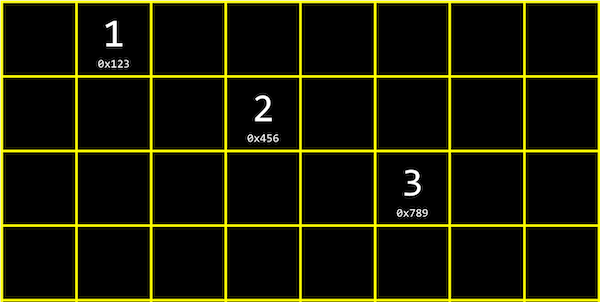
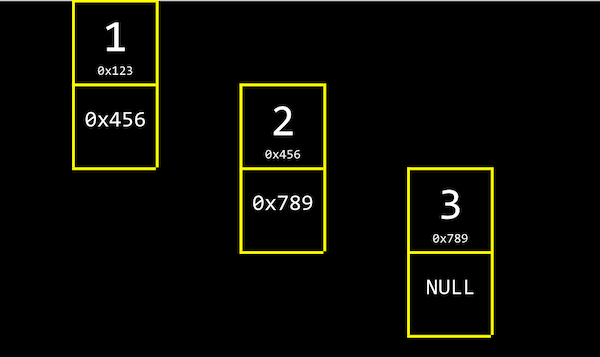
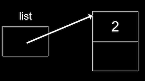
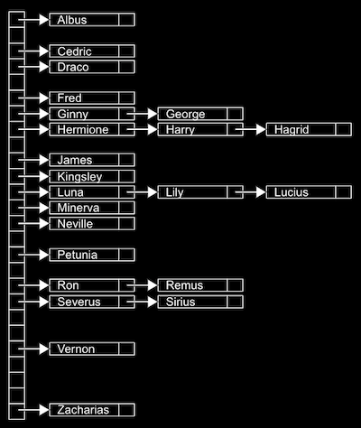
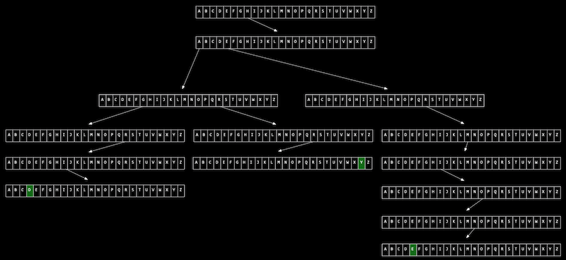

Lecture 5
Pointers
- Last time, we learned about pointers,
malloc, and other useful tools for working with memory. - Let’s review this snippet of code:
int main(void) { int *x; int *y; x = malloc(sizeof(int)); *x = 42; *y = 13; }- Here, the first two lines of code in our
mainfunction are declaring two pointers,xandy. Then, we allocate enough memory for anintwithmalloc, and stores the address returned bymallocintox. - With
*x = 42;, we go to the address pointed to byx, and stores the value42into that location. - The final line, though, is buggy since we don’t know what the value of
yis, since we never set a value for it. Instead, we can write:y = x; *y = 13;- And this will set
yto point to the same location asxdoes, and then set that value to13.
- And this will set
- Here, the first two lines of code in our
- We take a look at a short clip, Pointer Fun with Binky, which also explains this snippet in an animated way!
Resizing arrays
- In week 2, we learned about arrays, where we could store the same kind of value in a list, side-by-side. But we need to declare the size of arrays when we create them, and when we want to increase the size of the array, the memory surrounding it might be taken up by some other data.
- One solution might be to allocate more memory in a larger area that’s free, and move our array there, where it has more space. But we’ll need to copy our array, which becomes an operation with running time of O(n), since we need to copy each of n elements in an array.
- We might write a program like the following, to do this in code:
#include <stdio.h> #include <stdlib.h> int main(void) { // Here, we allocate enough memory to fit three integers, and our variable // list will point to the first integer. int *list = malloc(3 * sizeof(int)); // We should check that we allocated memory correctly, since malloc might // fail to get us enough free memory. if (list == NULL) { return 1; } // With this syntax, the compiler will do pointer arithmetic for us, and // calculate the byte in memory that list[0], list[1], and list[2] maps to, // since integers are 4 bytes large. list[0] = 1; list[1] = 2; list[2] = 3; // Now, if we want to resize our array to fit 4 integers, we'll try to allocate // enough memory for them, and temporarily use tmp to point to the first: int *tmp = malloc(4 * sizeof(int)); if (tmp == NULL) { return 1; } // Now, we copy integers from the old array into the new array ... for (int i = 0; i < 3; i++) { tmp[i] = list[i]; } // ... and add the fourth integer: tmp[3] = 4; // We should free the original memory for list, which is why we need a // temporary variable to point to the new array ... free(list); // ... and now we can set our list variable to point to the new array that // tmp points to: list = tmp; // Now, we can print the new array: for (int i = 0; i < 4; i++) { printf("%i\n", list[i]); } // And finally, free the memory for the new array. free(list); } - It turns out that there’s actually a helpful function,
realloc, which will reallocate some memory:#include <stdio.h> #include <stdlib.h> int main(void) { int *list = malloc(3 * sizeof(int)); if (list == NULL) { return 1; } list[0] = 1; list[1] = 2; list[2] = 3; // Here, we give realloc our original array that list points to, and it will // return a new address for a new array, with the old data copied over: int *tmp = realloc(list, 4 * sizeof(int)); if (tmp == NULL) { return 1; } // Now, all we need to do is remember the location of the new array: list = tmp; list[3] = 4; for (int i = 0; i < 4; i++) { printf("%i\n", list[i]); } free(list); }
Data structures
- Data structures are programming constructs that allow us to store information in different layouts in our computer’s memory.
- To build a data structure, we’ll need some tools we’ve seen:
structto create custom data types.to access properties in a structure*to go to an address in memory pointed to by a pointer
Linked Lists
- With a linked list, we can store a list of values that can easily be grown by storing values in different parts of memory:
- This is different than an array since our values are no longer next to one another in memory.
- We can link our list together by allocating, for each element, enough memory for both the value we want to store, and the address of the next element:
- By the way,
NULrefers to\0, a character that ends a string, andNULLrefers to an address of all zeros, or a null pointer that we can think of as pointing nowhere.
- By the way,
- Unlike we can with arrays, we no longer randomly access elements in a linked list. For example, we can no longer access the 5th element of the list by calculating where it is, in constant time. (Since we know arrays store elements back-to-back, we can add 1, or 4, or the size of our element, to calculate addresses.) Instead, we have to follow each element’s pointer, one at a time. And we need to allocate twice as much memory as we needed before for each element.
- In code, we might create our own struct called
node(like a node from a graph in mathematics), and we need to store both anintand a pointer to the nextnodecallednext:typedef struct node { int number; struct node *next; } node;- We start this struct with
typedef struct nodeso that we can refer to anodeinside our struct.
- We start this struct with
- We can build a linked list in code starting with our struct. First, we’ll want to remember an empty list, so we can use the null pointer:
node *list = NULL;. - To add an element, first we’ll need to allocate some memory for a node, and set its values:
node *n = malloc(sizeof(node)); // We want to make sure malloc succeeded in getting memory for us: if (n != NULL) { // This is equivalent to (*n).number, where we first go to the node pointed // to by n, and then set the number property. In C, we can also use this // arrow notation: n->number = 2; // Then we need to store a pointer to the next node in our list, but the // new node won't point to anything (for now): n->next = NULL; } - Now our list can point to this node:
list = n;:
 - To add to the list, we’ll create a new node the same way, perhaps with the value 4. But now we need to update the pointer in our first node to point to it.
- Since our
listpointer points only to the first node (and we can’t be sure that the list only has one node), we need to “follow the breadcrumbs” and follow each node’s next pointer:// Create temporary pointer to what list is pointing to node *tmp = list; // As long as the node has a next pointer ... while (tmp->next != NULL) { // ... set the temporary to the next node tmp = tmp->next; } // Now, tmp points to the last node in our list, and we can update its next // pointer to point to our new node. - If we want to insert a node to the front of our linked list, we would need to carefully update our node to point to the one following it, before updating list. Otherwise, we’ll lose the rest of our list:
// Here, we're inserting a node into the front of the list, so we want its // next pointer to point to the original list, before pointing the list to // n: n->next = list; list = n; - And to insert a node in the middle of our list, we can go through the list, following each element one at a time, comparing its values, and changing the
nextpointers carefully as well. - With some volunteers on the stage, we simulate a list, with each volunteer acting as the
listvariable or a node. As we insert nodes into the list, we need a temporary pointer to follow the list, and make sure we don’t lose any parts of our list. Our linked list only points to the first node in our list, so we can only look at one node at a time, but we can dynamically allocate more memory as we need to grow our list. - Now, even if our linked list is sorted, the running time of searching it will be O(n), since we have to follow each node to check their values, and we don’t know where the middle of our list will be.
- We can combine all of our snippets of code into a complete program:
#include <stdio.h> #include <stdlib.h> // Represents a node typedef struct node { int number; struct node *next; } node; int main(void) { // List of size 0, initially not pointing to anything node *list = NULL; // Add number to list node *n = malloc(sizeof(node)); if (n == NULL) { return 1; } n->number = 1; n->next = NULL; // We create our first node, store the value 1 in it, and leave the next // pointer to point to nothing. Then, our list variable can point to it. list = n; // Add number to list n = malloc(sizeof(node)); if (n == NULL) { return 1; } n->number = 2; n->next = NULL; // Now, we go our first node that list points to, and sets the next pointer // on it to point to our new node, adding it to the end of the list: list->next = n; // Add number to list n = malloc(sizeof(node)); if (n == NULL) { return 1; } n->number = 3; n->next = NULL; // We can follow multiple nodes with this syntax, using the next pointer // over and over, to add our third new node to the end of the list: list->next->next = n; // Normally, though, we would want a loop and a temporary variable to add // a new node to our list. // Print list // Here we can iterate over all the nodes in our list with a temporary // variable. First, we have a temporary pointer, tmp, that points to the // list. Then, our condition for continuing is that tmp is not NULL, and // finally, we update tmp to the next pointer of itself. for (node *tmp = list; tmp != NULL; tmp = tmp->next) { // Within the node, we'll just print the number stored: printf("%i\n", tmp->number); } // Free list // Since we're freeing each node as we go along, we'll use a while loop // and follow each node's next pointer before freeing it, but we'll see // this in more detail in Problem Set 5. while (list != NULL) { node *tmp = list->next; free(list); list = tmp; } }
More data structures
- A tree is another data structure where each node points to two other nodes, one to the left (with a smaller value) and one to the right (with a larger value):

- Notice that there are now two dimensions to this data structure, where some nodes are on different “levels” than others. And we can imagine implementing this with a more complex version of a node in a linked list, where each node has not one but two pointers, one to the value in the “middle of the left half” and one to the value in the “middle of the right half”. And all elements to the left of a node are smaller, and all elemnts to the right are greater.
- This is called a binary search tree because each node has at most two children, or nodes it is pointing to, and a search tree because it’s sorted in a way that allows us to search correctly.
- And like a linked list, we’ll want to keep a pointer to just the beginning of the list, but in this case we want to point to the root, or top center node of the tree (the 4).
- Now, we can easily do binary search, and since each node is pointing to another, we can also insert nodes into the tree without moving all of them around as we would have to in an array. Recursively searching this tree would look something like:
typedef struct node { int number; struct node *left; struct node *right; } node; // Here, *tree is a pointer to the root of our tree. bool search(node *tree) { // We need a base case, if the current tree (or part of the tree) is NULL, // to return false: if (tree == NULL) { return false; } // Now, depending on if the number in the current node is bigger or smaller, // we can just look at the left or right side of the tree: else if (50 < tree->number) { return search(tree->left); } else if (50 > tree->number) { return search(tree->right); } // Otherwise, the number must be equal to what we're looking for: else { return true; } } - The running time of searching a tree is O(log n), and inserting nodes while keeping the tree balanced is also O(log n). By spending a bit more memory and time to maintain the tree, we’ve now gained faster searching compared to a plain linked list.
- A data structure with almost a constant time search is a hash table, which is a combination of an array and a linked list. We have an array of linked lists, and each linked list in the array has elements of a certain category. For example, in the real world we might have lots of nametags, and we might sort them into 26 buckets, one labeled with each letter of the alphabet, so we can find nametags by looking in just one bucket.
- We can implement this in a hash table with an array of 26 pointers, each of which points to a linked list for a letter of the alphabet:
 - Since we have random access with arrays, we can add elements quickly, and also index quickly into a bucket.
- A bucket might have multiple matching values, so we’ll use a linked list to store all of them horizontally. (We call this a collision, when two values match in some way.)
- This is called a hash table because we use a hash function, which takes some input and maps it to a bucket it should go in. In our example, the hash function is just looking at the first letter of the name, so it might return
0for “Albus” and25for “Zacharias”. - But in the worst case, all the names might start with the same letter, so we might end up with the equivalent of a single linked list again. We might look at the first two letters, and allocate enough buckets for 26*26 possible hashed values, or even the first three letters, and now we’ll need 26*26*26 buckets. But we could still have a worst case where all our values start with the same three characters, so the running time for search is O(n). In practice, though, we can get closer to O(1) if we have about as many buckets as possible values, especially if we have an ideal hash function, where we can sort our inputs into unique buckets.
- We can use another data structure called a trie (pronounced like “try”, and is short for “retrieval”):
- Imagine we want to store a dictionary of words efficiently, and be able to access each one in constant time. A trie is like a tree, but each node is an array. Each array will have each letter, A-Z, stored. For each word, the first letter will point to an array, where the next valid letter will point to another array, and so on, until we reach something indicating the end of a valid word. If our word isn’t in the trie, then one of the arrays won’t have a pointer or terminating character for our word. Now, even if our data structure has lots of words, the lookup time will be just the length of the word we’re looking for, and this might be a fixed maximum so we have O(1) for searching and insertion. The cost for this, though, is 26 times as much memory as we need for each character.
- There are even higher-level constructs, abstract data structures, where we use our building blocks of arrays, linked lists, hash tables, and tries to implement a solution to some problem.
- For example, one abstract data structure is a queue, where we want to be able to add values and remove values in a first-in-first-out (FIFO) way. To add a value we might enqueue it, and to remove a value we would dequeue it. And we can implement this with an array that we resize as we add items, or a linked list where we append values to the end.
- An “opposite” data structure would be a stack, where items most recently added (pushed) are removed (popped) first, in a last-in-first-out (LIFO) way. Our email inbox is a stack, where our most recent emails are at the top.
- Another example is a dictionary, where we can map keys to values, or strings to values, and we can implement one with a hash table where a word comes with some other information (like its definition or meaning).
- We take a look at “Jack Learns the Facts About Queues and Stacks”, an animation about these data structures.